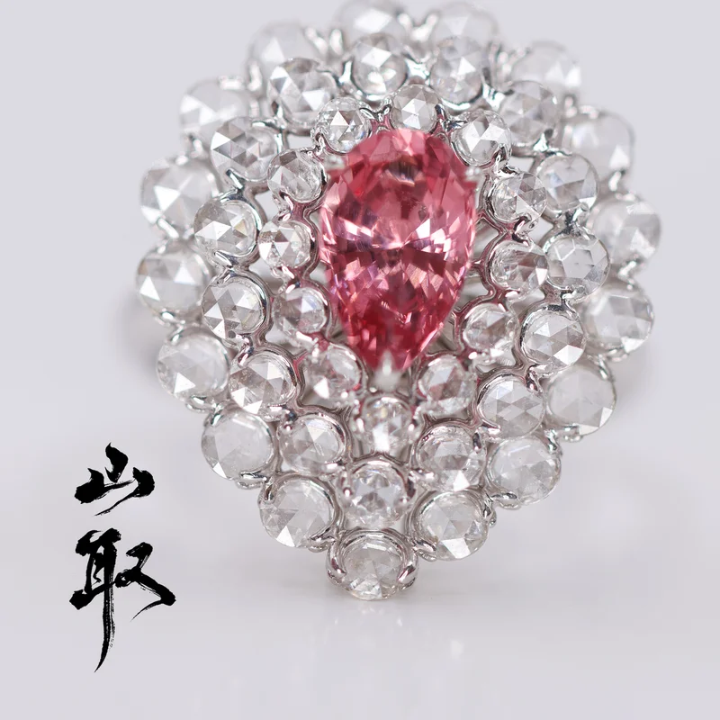
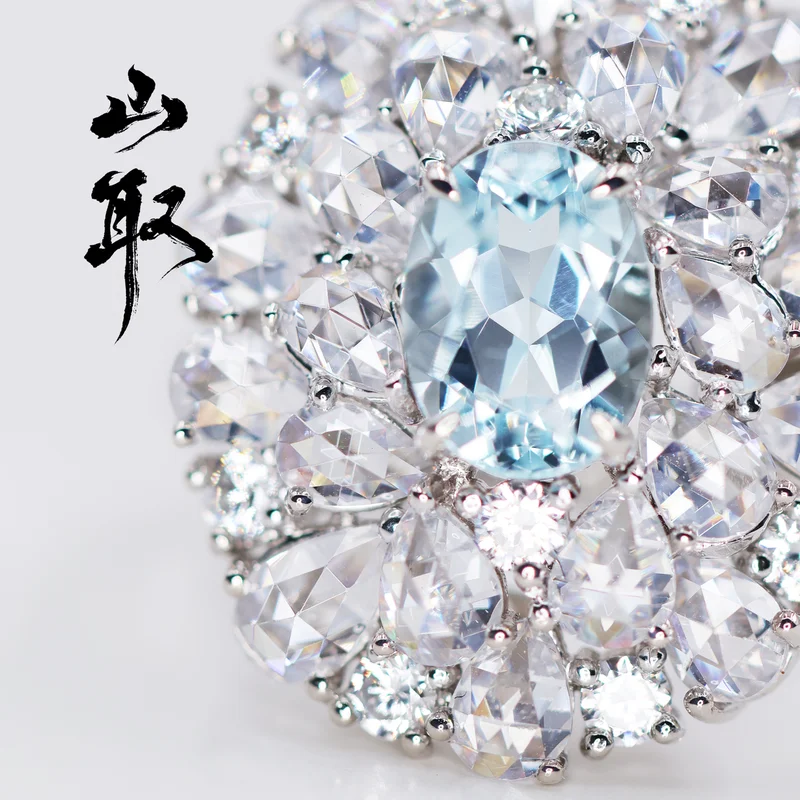
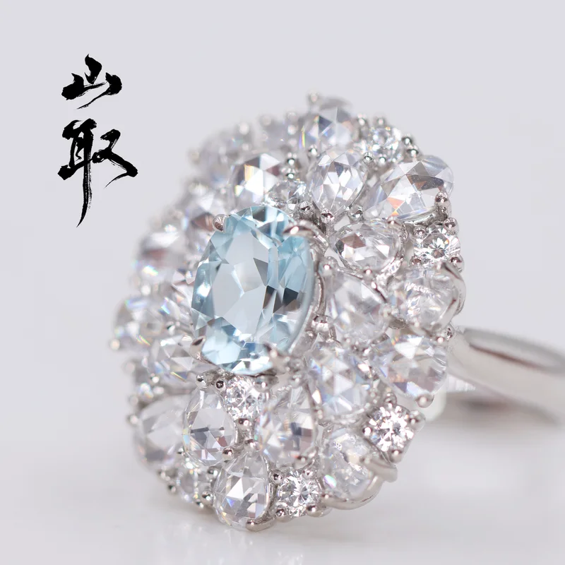
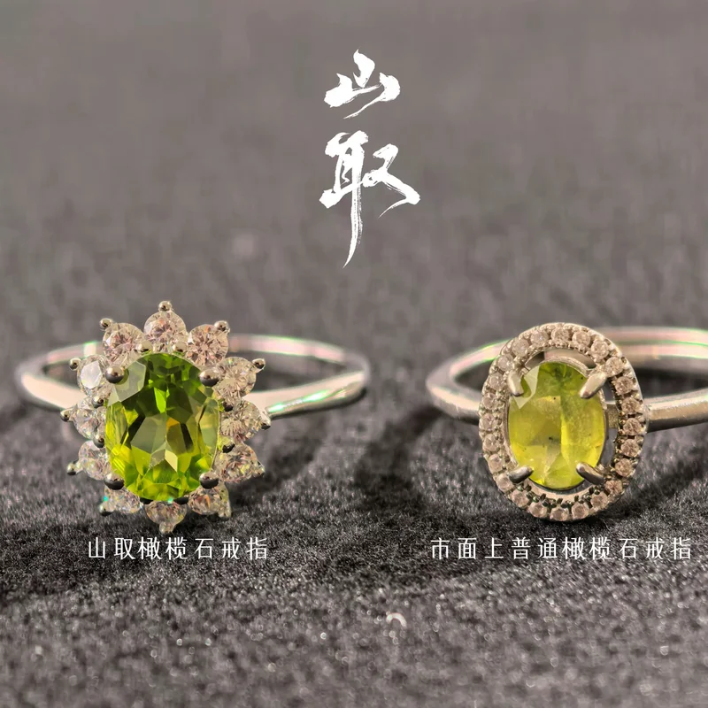
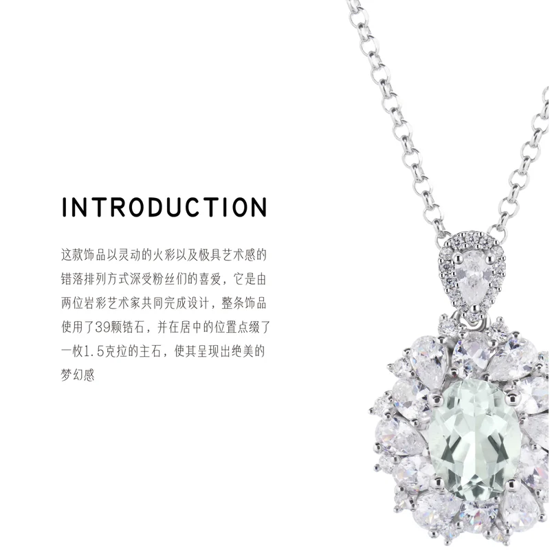
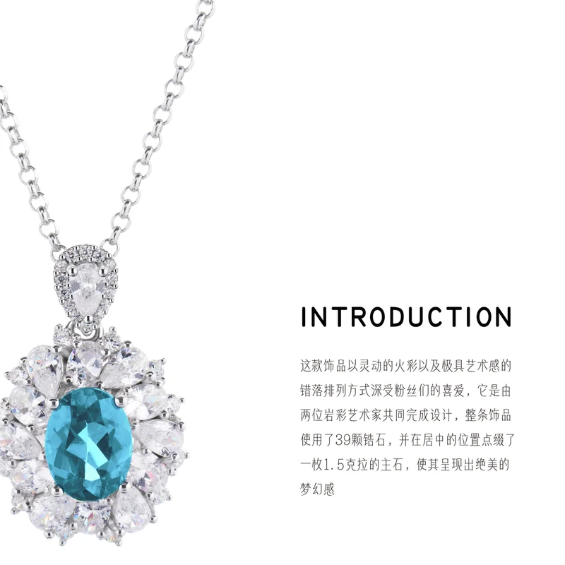

艺术展与收藏合作
参与国内外多场艺术展览，并与收藏机构合作推出限定作品系列。
品牌精神
每一件山取作品都从矿脉与岩石中汲取灵感，通过工艺与色彩重塑内在精神。我们追求的不只是华丽，而是那一抹穿透灵魂的沉静与光芒。

珠宝系列
山取珠宝强调原矿的质地与色彩，用探索级别的甄选标准和手工打磨工艺，将每一块水晶矿石转化为可佩戴的时尚艺术品。


岩彩系列
颜料师张俊杰结合岩石、矿物与色彩，创造出具有厚度与光影变化的岩彩画。作品兼具装饰与收藏价值，适合私人空间、雅宅与艺术场所收藏。
艺术家
张俊杰以数年现场采风和材料实验为基础，形成了独特的“山取”语言。每一次创作，都在寻找矿色与光线之间最柔软的平衡。
荣耀与善行
参与国内外多场艺术展览，并与收藏机构合作推出限定作品系列。
建立颜料研发与手工技艺传承体系，支持新艺术家的材料实验。
为高端客户提供艺术空间定制方案与品牌合作设计。



私藏咨询
山取欢迎与收藏者、艺术爱好者、品牌合作方建立更深层次的交流。我们将为您呈现独一无二的作品与定制可能。